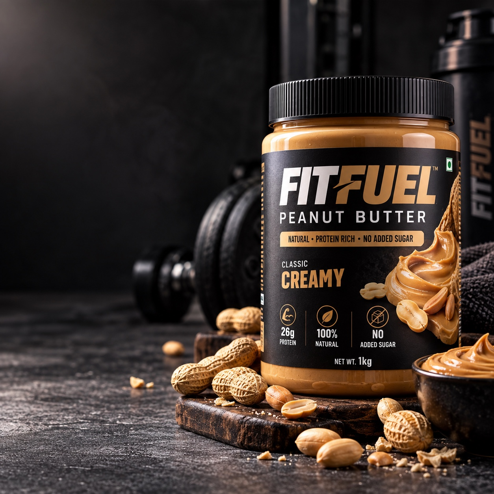
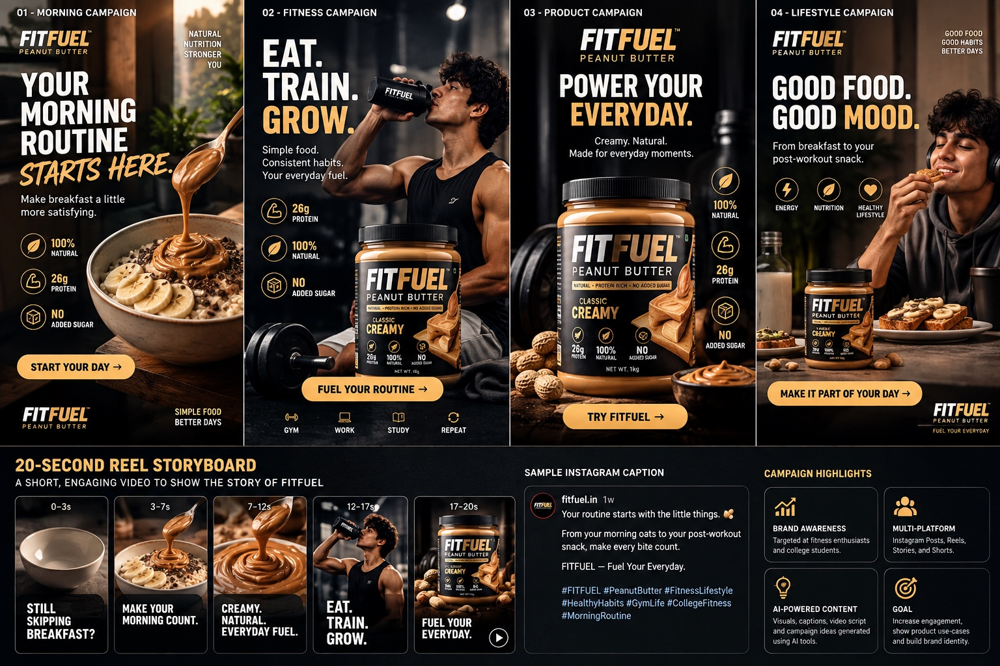
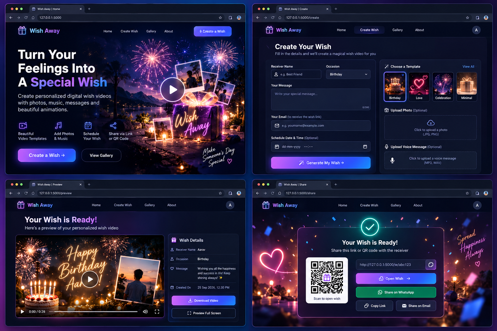

Scripts, captions, hooks, product descriptions and content ideas.
AI × DIGITAL MARKETING × CREATIVE CONTENT
Hi, I'm
Hi, I'm
Atharva Gholap
I use AI, design and digital tools to turn ideas into engaging content, marketing campaigns and creative digital experiences.
ChatGPTCanvaCapCutAI VideoPython
ATHARVA GHOLAP
CREATIVE SYSTEMIDEA → AI → CONTENTDesign • Video • Campaigns
01 / ABOUT
Building at the intersection of AI & creativity.
I’m Atharva Gholap, a second-year AI & Data Science student with a strong interest in digital marketing, content creation and technology. I enjoy exploring how AI can be used to create impactful content, build brands and solve real-world problems.
✦ AI & Data Science Student
✦ Pune, Maharashtra
✦ Creative Thinker • Fast Learner • Team Player
What I Can Do With AI
Social posts, ads, posters, thumbnails and campaign creatives.
Short-form videos, AI visuals, voiceovers and editing.
Content calendars, reel ideas, audience-focused content and campaigns.
Competitor research, trend analysis and campaign brainstorming.
Using AI and basic programming to reduce repetitive work.
02 / FEATURED WORK
Real examples of AI-powered content.
Product advertising, marketing video, campaign concepts and AI workflow experiments.

01 / AI PRODUCT ADVERTISEMENT
FITFUEL — Premium Product Creative
AI-generated commercial product photography for a fictional peanut butter brand, designed with a premium fitness advertising aesthetic.
AI VIDEO • 0:10
02 / AI MARKETING VIDEO
FITFUEL Campaign Reel
AI-generated short-form campaign video created for the FITFUEL fitness and food campaign, designed for social-first marketing.

03 / SOCIAL MEDIA CAMPAIGN
FITNESS & FOOD Campaign
A complete AI-assisted campaign concept covering social creatives, a 20-second reel storyboard, campaign copy and marketing goals.
AI MARKETING ASSISTANT
Generate a Campaign
e.g. Protein Oats
e.g. College Students
04 / AI CAMPAIGN GENERATOR
AI Marketing Assistant
A concept for turning a product and target audience into campaign-ready ideas, copy and creative directions.
03 / PROJECTS
Technical projects & content creation.
Deepfake Detector
AI-powered system to detect manipulated or deepfake content from videos and images.
Top 20 — National Hackathon
PYTHON • FLASK • HTML/CSS • JAVASCRIPTWish Away
A web application for creating personalized digital wishes with multimedia, animations and scheduling.
View Interface ↗THE SMARTX
Gaming and lifestyle content creation with thumbnails, short videos and audience-focused ideas.
04 / CREATIVE GALLERY
More AI-powered visuals.
Selected advertising, campaign and creative-direction work across product, lifestyle, gaming and food content.
05 / WORKFLOW
From idea to impact.
01 Idea→02 AI Research→03 Script & Copy→04 Visual Creation→05 Video / Design→06 Publish→07 Analyze
“AI doesn’t replace creativity — I use it to accelerate the creative process.”
06 / TOOLKIT
Tools I use to create & build.
AI, design, video and development tools I use across my creative projects and portfolio work.
AI CREATION
AI & Generative Tools
ChatGPT • OpenArt • Google Flow • Kling AI
DEVELOPMENT
Build & Prototype
Python • Flask • OpenCV • MediaPipe
PythonFlaskOpenCVMediaPipe
07 / RESUME
My resume.
A concise overview of my education, experience, technical skills and project work.
PROFILE
Atharva Yogesh Gholap
First-Year B.E. Artificial Intelligence & Data Science student with 1 year of customer service and operations experience at DTDC Express.
EducationB.E. AI & Data ScienceCGPA 8.45/10
ExperienceDTDC Express1 year
SkillsPython • C • Git & GitHubBasic AI & Data Science
ProjectDeepfake Detection SystemTop 20 — 110 teams
08 / CONTACT
Let’s work together.
I’m open to opportunities where I can combine AI, creativity and digital marketing to create useful and engaging content.